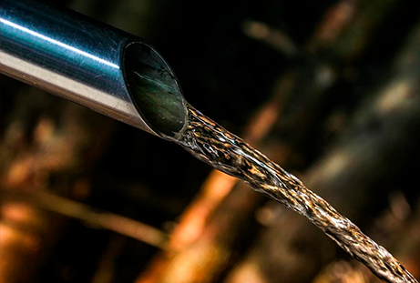

L'acqua è una risorsa vitale per la vita sulla Terra. Copre il 71% della superficie del pianeta e costituisce circa il 60% del corpo umano. Tuttavia, solo il 2.5% dell'acqua è dolce e accessibile per l'uso umano.
I problemi attuali sono:
|  |
|---|
Le azioni necessarie sono:
 |
|---|